阅读导航(图表按讲述顺序穿插)
速览:基准长什么样、发现了什么 背景与动机:为什么需要 MMLongEmbed 核心观察:三个反直觉的结论 方法:四个任务与干扰项构造 系统:11 个模型与总体成绩 实验:位置偏差、模态干扰与长度扩展 结论与局限 编者点评 术语速查(阅读中随时回看)
01 · Overview
速览:基准长什么样、发现了什么
多模态嵌入模型(MEM) 把文本、文档图像、视频帧等异构模态映射进同一个向量空间,让"用文本检索图片/视频/文档"成为可能。近年来以 MLLM 为底座的新一代 MEM(如 Qwen3-VL-Embedding、GME)把上下文窗口推到了 32K tokens 以上,支撑起多模态 RAG、智能体工作流等真实应用。但作者指出一个尖锐的矛盾:上下文窗口的理论长度,并不等于模型在长上下文中的真实理解与表示能力 ——窗口"塞得下",不代表"读得懂"。
MMLongEmbed 正是为填补这一评测空白而提出的第一个系统性长上下文 MEM 基准:
上下文长度
32K+ tokens 覆盖 256 → 32,768
任务 / 数据集
4 / 8 合成 ×1 + 真实 ×3
四个评测任务横跨三种输入格式(纯文本、纯图像、图文交错):Visual Grounding (视觉锚点定位,合成 NIAH 任务)与三个真实任务——Multi-Source Reasoning (多源推理)、Logical Summarization (逻辑摘要)、Temporal Summarization (时序摘要)。八个数据集的统计见下表:
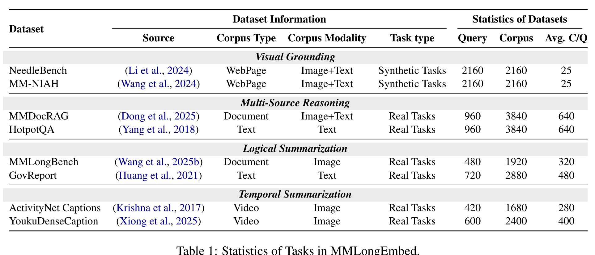
Table 1: Statistics of Tasks in MMLongEmbed. (原文表注)
8 个数据集按合成/真实分为两个阵营:合成任务 Visual Grounding 来自 NeedleBench 与 MM-NIAH(网页图文),查询与候选各 2,160 条,每查询平均 25 个候选;真实任务里,Multi-Source Reasoning 用 MMDocRAG 与 HotpotQA,Logical Summarization 用 MMLongBench 与 GovReport,Temporal Summarization 用 YoukuDenseCaption 与 ActivityNet Captions,平均每查询候选数(C/Q)从 280 到 640 不等,且跨长度池保持一致。
长度是基准确立的核心控制变量:合成任务把上下文切成 8 个长度区间(256 到 32K),真实任务切成 8K / 16K / 32K 三档。下图展示了全部候选的长度分布,四个任务的区间被清晰分离开来:
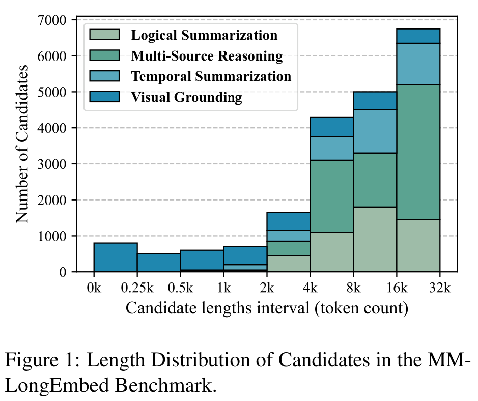
Figure 1: Length Distribution of Candidates in the MMLongEmbed Benchmark. (原文图注)
横轴 token 数(对数刻度),纵轴频次:Multi-Source Reasoning 覆盖 8K–32K 三个真实长度池(蓝色),Temporal Summarization 分布在中长区间(橙色),Visual Grounding 由合成构造铺满 256–32K 八档(绿色),Logical Summarization 集中在更长区间(黄色)。长度分层让"上下文变长"本身成为一个可单独考察的变量。
💡 点击任意图片可查看原始高清大图,再次点击或按 Esc 关闭。
三大核心发现(先睹为快):
规模与能力脱钩 :模型变大、嵌入维度变高,长上下文表现几乎不涨——Qwen3 系列 8B 相对 2B 只提升约 1 分(53.41 vs 52.31),甚至在 MMDocRAG 的 Hard 子集上 8B(25.42)反而不如 2B(32.29)。细粒度检索随长度系统性衰退 :大多数模型只有在 ≤2K tokens 时能稳定精确检索,之后持续恶化;而汇总类任务相对稳定——因为真实长文里有冗余、证据分散。深度理解是短板 :一旦用"高相似度干扰项"封住表面特征匹配的捷径,模型成绩断崖式下跌;不同模型对跨模态冗余信息的鲁棒性也差异悬殊。
一句话定位: 这是"长上下文 + 多模态嵌入"这个交叉口的第一个系统性基准——它不评测 MEM 的生成能力,而是评测检索/表示能力:给定一条(较短的)查询,从一堆(很长的)多模态候选里找出正确的那个。
02 · Motivation
背景与动机:为什么需要 MMLongEmbed
2.1 多模态嵌入模型的演进
MEM 的发展大致经历了三代:第一代以 CLIP 为代表的对比式双塔 架构,通过海量图文预训练建立共享语义空间;第二代由 MLLM 驱动,如 E5-V、VLM2Vec、GME、MM-Embed,把视觉大模型当作骨干学出更通用灵活的嵌入空间;第三代开始引入推理驱动的表示学习 (如 Embed-RL、MMEmb-R1),在表征学习阶段内嵌隐式推理。同时,上下文窗口一路扩到 32K、甚至 Qwen3-VL-Embedding 的文档级理解和 128K 的专有模型。
2.2 现有基准的三个缺口
与模型能力的狂奔相比,评测明显滞后:主流嵌入基准(MTEB/MMEB/MIEB 等)聚焦短输入与简单理解;少数面向长输入的基准(如 LongEmbed)又有三个结构性缺陷,MMLongEmbed 逐一对应解决:
① 上下文多样性不足 :仅限纯文本,覆盖不了真实世界里的图文交错网页、文档页、视频帧 → MMLongEmbed 引入四种数据源(文档、网页、视频帧序列、长文本)与三种输入格式(纯图像、图文交错、纯文本)。② 缺乏长度分层设计 :输入长度不是受控变量,无法系统分析"上下文扩大到什么程度、性能怎么变" → 长度分层池化,逐档独立评估。③ 任务难度不够 :难度不显式控制,只是把可用数据全部塞进候选池"充数",很多任务靠表面特征匹配就能蒙对 → 构造高质量干扰项,合成任务用高相似度 needle 干扰制造细粒度歧义,真实任务用语义上"看起来很像"的干扰项逼模型超越表面匹配。
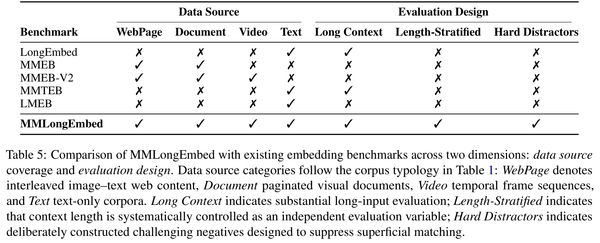
Table 5: Comparison of MMLongEmbed with existing embedding benchmarks across two dimensions: data source coverage and evaluation design. (原文表注)
七个维度的覆盖矩阵:LongEmbed 只覆盖文本且无长度分层/无硬干扰;MMEB 系列覆盖网页与文档但无长上下文;MMTEB/LMEB 只有文本;只有 MMLongEmbed 在网页、文档、视频、文本四类数据源和"长上下文 + 长度分层 + 硬干扰项"三项设计上全部打勾——这正是它的三个差异点。
为什么"硬干扰项"是关键设计: 检索评测的传统做法是"扩大候选池",但候选之间如果差异巨大,模型靠词面重叠、整体语义相似度这类浅层信号就能排序正确,测不出真实力。MMLongEmbed 的做法相反:让干扰项与正确答案高度相似——只在一个关键实体、一段关键证据、或时序结构上不同——从而专门考验"深层语义与结构依赖"。
03 · Key Findings
核心观察:三个反直觉的结论
在详细展开方法之前,先固定住论文最重要的三个实证结论(全部来自 §5–§6,后文逐项给出证据):
观察一:规模膨胀 ≠ 长上下文能力增强
同一模型家族内,参数翻 2–4 倍只带来边际收益:Qwen3 8B vs 2B 为 53.41 vs 52.31,GME 7B vs 2B 只有 24.63 vs 23.10,甚至出现 8B 在细粒度 Hard 子集上不如 2B 的倒挂。配对 t 检验(Table 8)显示 Qwen3 家族的差异统计不显著(p=0.5375)。结论是:没有针对长上下文的专项优化,单纯堆规模与嵌入维度,解决不了长上下文里的细粒度判别问题。
观察二:性能退化随"上下文长度"和"关键信息位置"系统性地变化
把长度当成受控变量后可以看到清晰的规律:细粒度检索(Visual Grounding)在约 2K tokens 之后持续滑坡;目标信息位于序列中间时成绩最差(位置偏差,§6.1);而汇总类任务(Summarization)相对稳定——因为冗余高、证据分散,"整体的语义标签"仍然可得。
观察三:现役 MEM 严重依赖表面特征匹配
面对精心构造的高相似度干扰项,多数模型在 Easy 子集上的高分瞬间崩塌:Logical Summarization 从 80–90% 跌到 10–20%,Temporal Summarization 的 Hard 集同样惨烈。跨模态干扰鲁棒性也高度不均——有的模型对模态偏置敏感、有的被图文混合干扰"击穿"、只有少数模型(如 Rzen-v2-7B)保持稳定。
一句话概括论文主旨: 现在的 MEM 是"宽泛的相关性匹配器",而不是"细粒度的语义/结构理解器";长上下文评测的缺口,恰好把这一真相暴露了出来。
04 · Method
方法:四个任务与干扰项构造
4.1 查询与语料设置:长度分层池化 + 统一 token 计数
基准采用严格长度分层的池化机制 :所有查询相对较短,候选多模态文档显著更长;查询-候选对被按候选长度分入不同池子(合成任务 8 档,真实任务 8K/16K/32K 三档),每个长度区间独立评测。同时严格控制候选密度——同一任务内,所有长度池的平均候选数/查询(C/Q)保持一致,只允许跨任务不同(见表 1)。
由于不同模型的视觉 token 化差异很大,论文沿用并修订了 MMLongBench 的统一多模态 token 计数方案作为标准化基线:文本用 Qwen3 tokenizer 计算;图像用 16×16 patch 嵌入 + 2×2 空间合并,等效每个视觉 token 覆盖 32×32 像素,一张 $H\times W$ 图像的视觉 token 数为:
$$N_{\text{image}} = \left\lceil \frac{H}{32} \right\rceil \times \left\lceil \frac{W}{32} \right\rceil \tag{1}$$
总上下文长度 $L$ 是所有模态 token 之和(文本 token 总和 $\textstyle N_{\text{text}}$ 与 $K$ 张图像的视觉 token 之和):
$$L = N_{\text{text}} + \sum_{i=1}^{K} N_{\text{image}}^{(i)} \tag{2}$$
为什么统一 token 计数: 不同模型对同一张图的 token 化差异可能高达数倍(Qwen2.5-VL 系列的纯视觉压缩、与 InternVL 的动态 token 等)。若按模型各自口径分段,同一"长度池"对不同模型就不是同一难度;统一方案保证长度是一个公平、可比较的控制变量。
4.2 数据构造总览
四类任务的构造管线统一见 Figure 2:上面半部分 是合成任务 Visual Grounding——needle(目标实例)按不同的"插入深度(depth)"与"上下文长度(length)"注入干草堆,每个 深度×长度 配置独立评测,形成一张"池矩阵";下面半部分 是三个真实任务——先把多模态上下文按长度分池,再分别构造 Easy 池(未扰动)与 Hard 池(针对性干扰):多源推理用"上下文替换"删除关键证据,逻辑摘要用"证据破坏"替换大段文本,时序摘要把视频事件段打乱重排;右侧展示了检索打分示例(Top-1 命中 0.575,Top-2 干扰 0.361)。
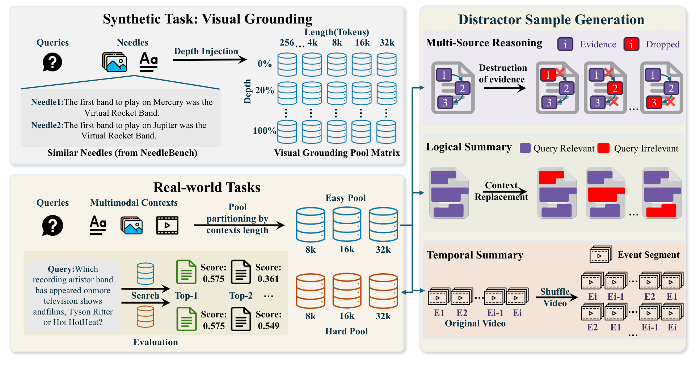
Figure 2: Overview of the MMLongEmbed data construction pipeline. (原文图注)
左上:合成任务按 [深度等级 × 长度区间] 注入 needle 构造池矩阵;下方:真实任务按候选长度分池(8K/16K/32K),Hard 池通过三种破坏机制(删证据、换文本、打乱事件序列)生成,且与 Easy 池严格等长,防止模型用长度当捷径。注意图中 "Temporal Summary"/"Logical Summary" 为缩写,全称分别为 Temporal/Logical Summarization。
4.3 任务一:Visual Grounding(合成 · 视觉锚点定位)
这是多模态版的"大海捞针(NIAH)":从 NeedleBench 与 MM-NIAH 分别筛选 25 个文本与图像查询-锚点对,锚点(docx needle)被嵌入从 OBELICS 采样的图文交错"干草堆"里。上下文长度横跨 256–32,768 tokens 共八档,插入深度离散化为 6 级(0%–100%);每个 长度×深度 配置配一个 25 篇候选文档的专属语料。最关键的设计是锚点之间高度相似 :
文本锚点与干扰项 共享几乎相同的句法结构与词面重叠,只在核心实体上不同。例如目标锚点 "The first band to play on the Moon was the Virtual Rocket Band.",干扰锚点 "…on Venus …";查询 "第一支在月球演出的乐队是哪支?"——靠词面重叠的模型必然在两者间摇摆。视觉锚点与干扰项 用生成模型合成现实中不存在、训练集里不可能泄漏的独特物体/场景,再放进随机背景图与"视觉上类似的干扰图"中,迫使模型依赖零样本细粒度视觉对齐,而非粗粒度场景识别。
评测意图: 这一任务把"细粒度实例级判别"与"位置/长度"两个变量正交化,是整篇论文最锋利的手术刀——它直接量化:模型在长序列里到底还记得住多少"精确到实体"的信息。
4.4 任务二:Multi-Source Reasoning(真实 · 多源推理)
基于 HotpotQA 与 MMDocRAG,评估模型跨多个证据片段(2–5 段)捕获结构化证据链的能力。先用"强链接锚点"过滤太泛的查询(判定提示词见表 12),原始上下文 ≤8K;再用语义无关但行文自然的文本把上下文扩张到 16K/32K,同时保持关键证据的相对位置不变 。
Hard 干扰项通过破坏推理链 生成:从扩张后的候选中删掉关键证据跨度(第一段/最后一段/中间随机段),并用严格等长的连贯文本替换——既打破推理链,又消除长度线索。Easy 池则是把其他文档填充到统一长度的未损坏版本。下表给出 HotpotQA 的具体案例构造:
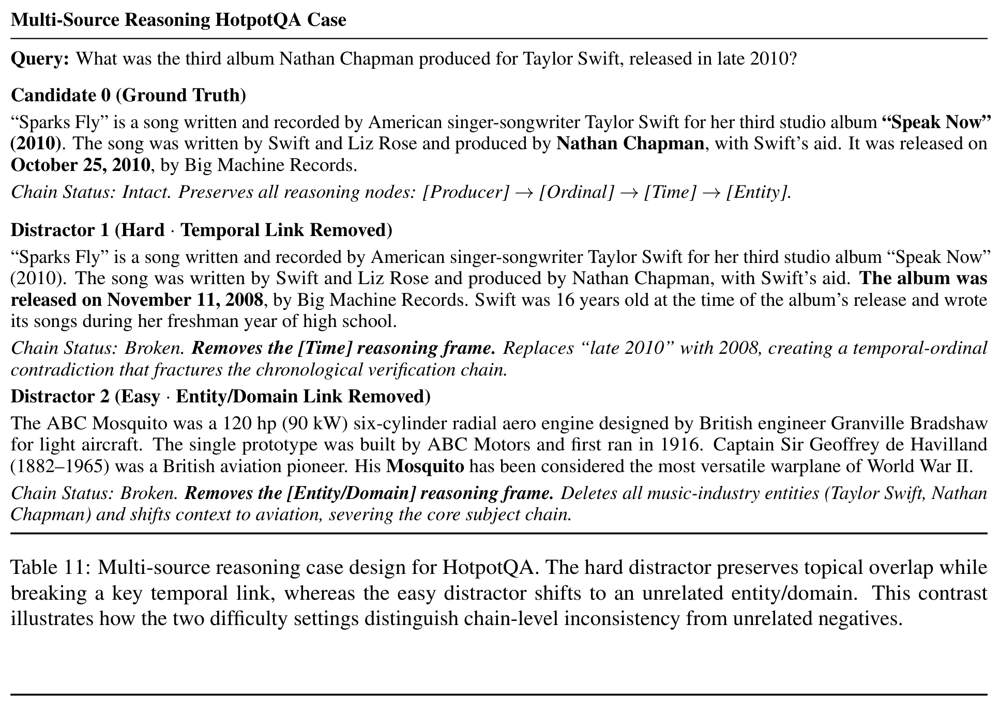
Table 11: Multi-source reasoning case design for HotpotQA. (原文表注省略,完整见原图)
查询:"Nathan Chapman 为 Taylor Swift 制作的第三张专辑(2010 年底发行)是哪张?" 正样本保留完整推理节点链 [制作人→序数→时间→实体];Hard 干扰项把发行时间从 2010 换成 2008,破坏[时间]节点,制造"时序-序数矛盾";Easy 干扰项直接换到航空领域的 ABC 发动机,删除[实体/领域]节点。两个难度区分的是"链级不一致"与"无关负例"。
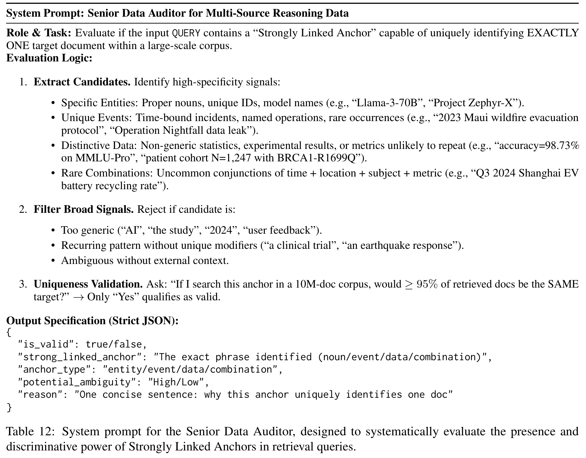
Table 12: System prompt for the Senior Data Auditor… (原文表注)
数据构造的第一道闸门:让 LLM 扮演"高级数据审计员",判定查询是否含能唯一锁定目标文档的"强链接锚点"(具体的专有名词、唯一事件、独特数据、稀有组合),拒绝泛化信号(如 "AI"、"the study"),并要求"在 1000 万文档里检索,≥95% 命中同一篇"才放行——防止查询本身就能被词面匹配解掉。
4.5 任务三:Logical Summarization(真实 · 逻辑摘要)
基于 GovReport(文本)与 MMLongBench(文档图像),评测"把摘要与长文档全局语义对齐"的能力,只保留需要宏级文档理解而非局部摘抄的子集。Hard 变体的构造是:把大段连续跨度(前 25% / 后 25% / 中间 50%)替换为查询无关内容——关键在替换来源 :文本用 BM25 全局索引检索与摘要高度相似但事实不同的文档,动态抽取其段落;多模态则用同一源文档的扩展版收割"未见过的连续图像页"做文档内替换。这样注入的噪声词法重叠高、行文流畅、视觉格式统一——局部语法连贯,全局语义断裂 ,模型无法靠局部匹配偷分。
Table 10: Logical case design. (原文表注)
查询是 GAO 关于阿富汗/伊拉克军队露天焚烧坑的完整审计摘要;正样本覆盖全部三个审计维度(合规、替代方案、健康监测);三个干扰项各只覆盖一个子主题(仅合规违规、仅承包商物流、仅空气污染背景),但都与查询词面高度重叠——模型若只看局部关键词密度,很容易把 Partial 干扰项排到 Ground Truth 前面。
4.6 任务四:Temporal Summarization(真实 · 时序摘要)
基于 YoukuDenseCaption(中文)与 ActivityNet Captions,评测视频长程时序结构理解:所有视频统一降采样到 1 FPS 构成标准时序帧序列,检索单位是"整段候选视频"(有序帧序列)。任务形式化见 Figure 5:一条描述事件序列的文本查询(如"先…然后…最后…"),要求从候选视频中检索出最相关的一个;查询由 Qwen2.5-32B-Instruct 把拼接字幕重写为带显式过渡词的连贯序列(提示词见表 13),中文标注用同一模型零样本直译成英文(见表 14)。
Hard 干扰项的核心创新是事件级时间扰动 :不搞朴素的逐帧打乱,而是先把视频在语义边界处分段,再做宏结构变换(整段时序反转 、块级置换 )——保留事件级语义单元,破坏全局叙事与时序;配合 0.5 秒防重叠滤镜保证事件边界清晰。Easy 池用其他未扰动视频。
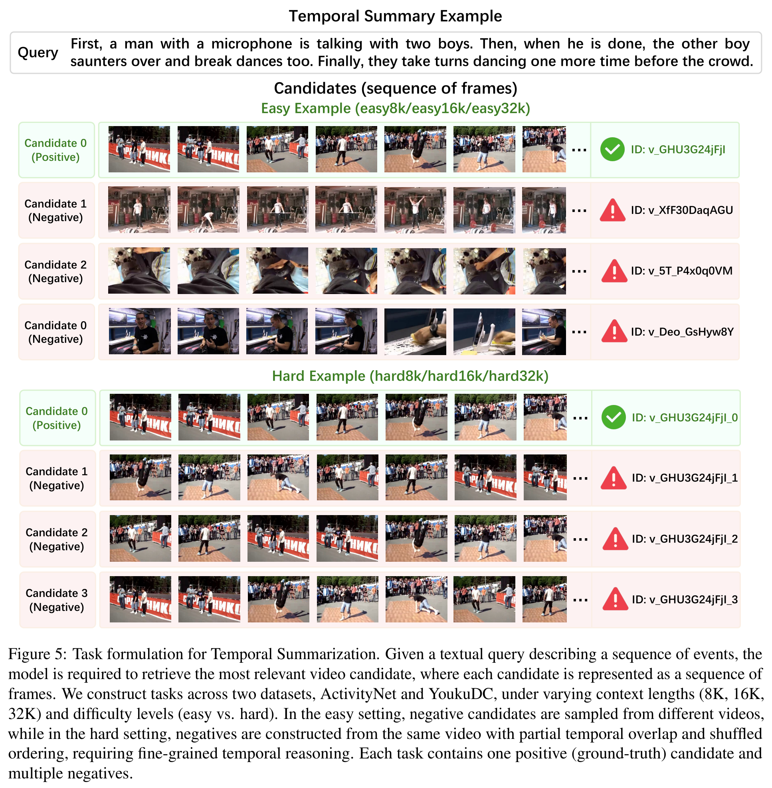
Figure 5: Task formulation for Temporal Summarization. (原文图注)
上半部分(Easy):负样本来自不同视频 ——整体场景不同,靠全局语义就能区分;下半部分(Hard):负样本来自同一视频 、帧内容几乎相同,只是时间重叠部分被打乱顺序——必须做细粒度时序推理才能区分。"easy8k/16k/32k" 与 "hard8k/16k/32k" 构成每个数据集 6 个子任务。
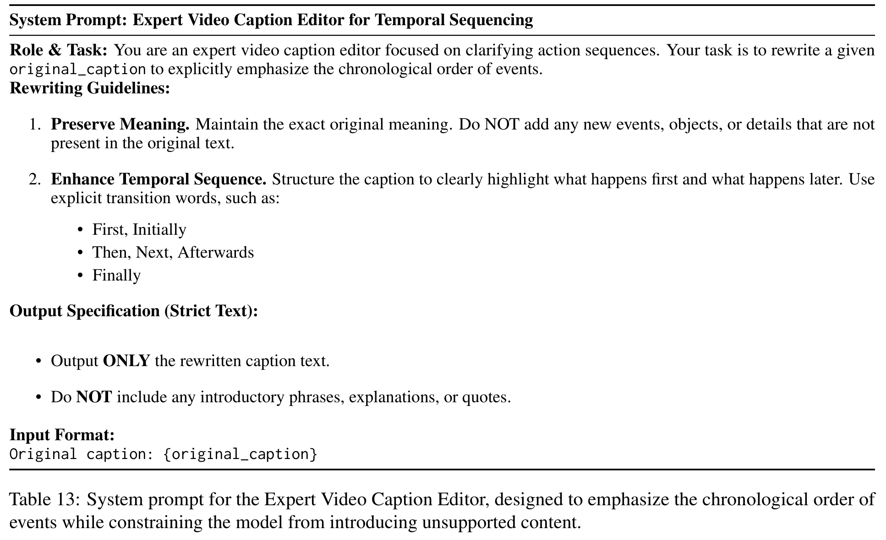
Table 13: System prompt for the Expert Video Caption Editor… (原文表注)
把原始字幕重写为显式强调时间顺序(First/Then/Finally)的版本,同时硬性约束:不得添加原文本不存在的任何事件、对象或细节——保证查询里的时序信息全部来自视频本身,而不是 LLM 的脑补。
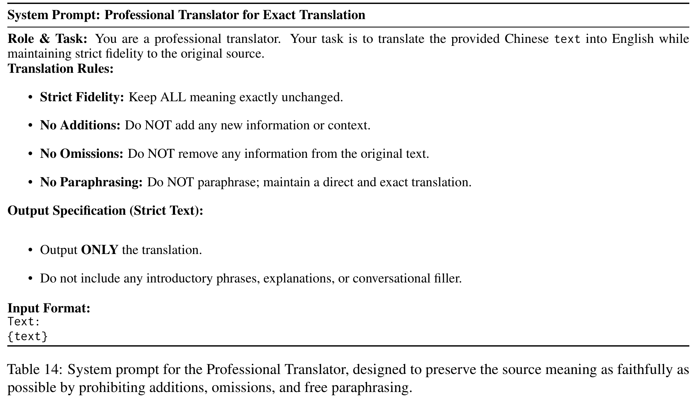
Table 14: System prompt for the Professional Translator… (原文表注)
YoukuDenseCaption 是中文标注,直接用现成翻译会引入文本层面的人为特征;该提示词用贪婪解码零样本直译,禁止增删与改写,确保评测反映的是真实视觉-语义对齐而非文本伪影。
05 · Models & Overall Results
系统:11 个模型与总体成绩
5.1 评测模型
论文评测 11 个上下文窗口 ≥32K 的 MEM:10 个开源模型(2B–8B,嵌入维度 1536–4096)+ 1 个专有模型 Doubao-Seed-1.6(上下文 128K,参数未公开)。覆盖三代技术路线:早期对比式模态对齐模型、通用多模态嵌入模型、最新推理驱动嵌入模型。为防止超长输入的视觉 token 化差异导致 OOM,统一采用中间截断 策略(保留序列首尾,截掉中间)。
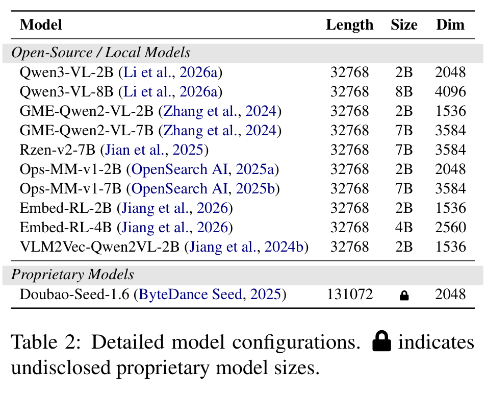
Table 2: Detailed model configurations. (原文表注)
注意右下角:Doubao-Seed-1.6 的窗口达 131,072 tokens,像"外来冠军"一样参与同场竞技。10 个开源模型全部 32,768 窗口;Qwen3-VL 系列维度最高(8B 达 4096),GME 最低,Embed-RL 与 VLM2Vec 为 1536。
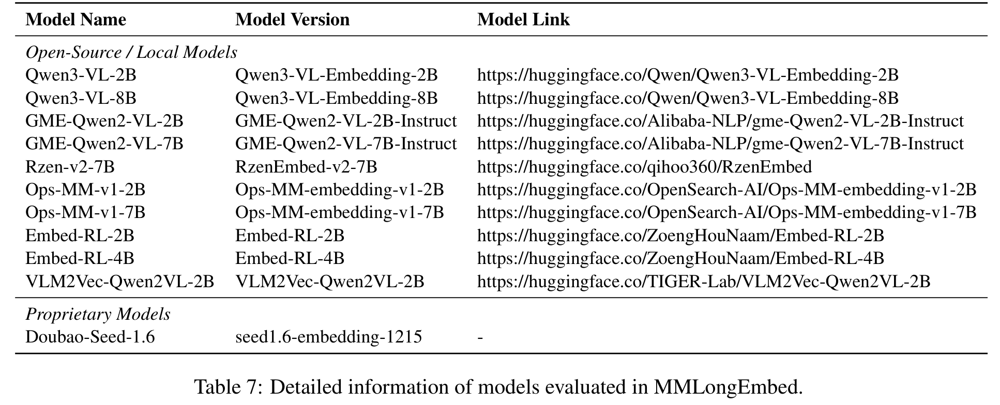
Table 7: Detailed information of models evaluated in MMLongEmbed. (原文表注)
可复现性列表:Qwen3-VL-Embedding-2B/8B、GME-Qwen2-VL-2B/7B-Instruct、RzenEmbed-v2-7B(360)、Ops-MM-embedding-v1-2B/7B(OpenSearch AI)、Embed-RL-2B/4B、VLM2Vec-Qwen2VL-2B(TIGER-Lab),以及专有的 Doubao seed1.6-embedding-1215。
5.2 总体表现(Precision@1)
主结果表按 14 个子集(4 任务 × Easy/Hard + 任务内数据集)给出每个模型的 Precision@1。读这张表前先建立两个坐标:HARD 列(灰底)是"封住表面匹配后"的成绩,EASY 列是"常规检索"成绩;纵向看模型家族,横向看难度衰减。
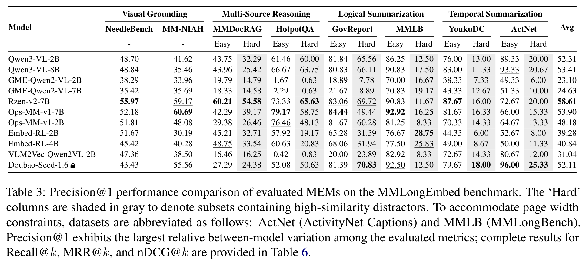
Table 3: Precision@1 performance comparison of evaluated MEMs on the MMLongEmbed benchmark. (原文表注)
① 平均分冠军是 Rzen-v2-7B(58.61),其后 Qwen3-VL-8B(53.41)、Ops-MM-v1-7B(53.90)、Doubao-Seed-1.6(52.11)胶着;② Hard 列普遍比 Easy 低 20–60 分,尤以 Summarization 系最惨(GovReport Hard 几乎全是 8–28 分);③ GME 家族与 VLM2Vec 在 MMDocRAG/HotpotQA 上接近失能(0.42–25),而它们在 Visual Grounding 的 NeedleBench 上并不差——不同任务暴露的能力维度完全不同。
此外论文还报告了 Recall@k / MRR@k / nDCG@k 等补充指标(见表 6):
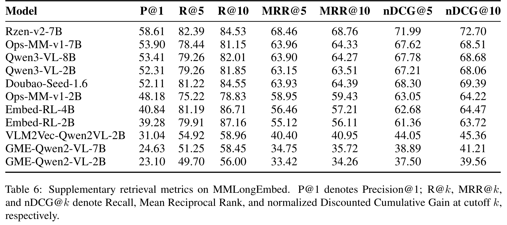
Table 6: Supplementary retrieval metrics on MMLongEmbed. (原文表注)
只以 P@1 论会低估某些模型:Embed-RL 的 R@10 高达 86.71/87.16(接近榜首),说明它"相关的内容都捞得回来,但排不到第一"——高相似度干扰下的精确排序是它的短板;GME 家族与 VLM2Vec 则各项全面垫底。
5.3 规模效应:统计检验
用配对 t 检验(10,000 次 bootstrap 重采样估计 95% CI)比较每个家族最大/最小变体在查询级 P@1 上的差异:
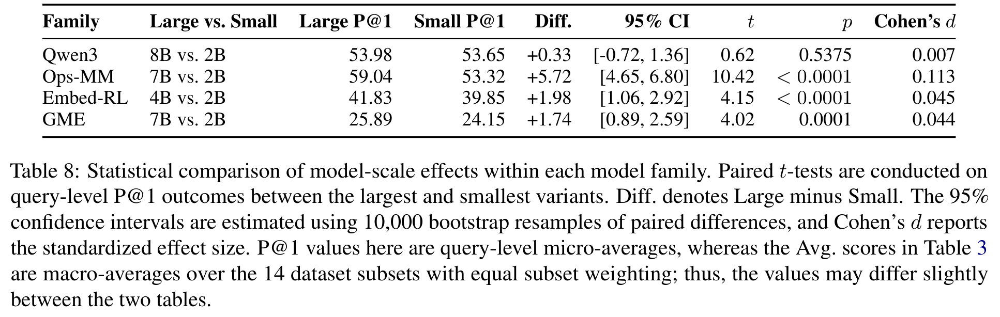
Table 8: Statistical comparison of model-scale effects within each model family. (原文表注)
一眼看三件事:① Qwen3 家族差异 +0.33、p=0.5375、Cohen's d=0.007——统计上完全不显著;② Ops-MM 的 +5.72 是唯一"有点分量"的家族改进(d=0.113);③ 四个家族的效果量 d 全部 ≤0.113,属于极小效应——"加大模型"在长上下文嵌入上的收益,基本可以忽略。
阅读提示: 这里的 P@1 是查询级微平均,与主表 Table 3 的宏平均(14 个子集等权)数值略有出入——两种口径都站得住,别当成数据矛盾。
5.4 Easy 任务上的难度阶梯
把 Easy 各任务放在一起比较,难度呈清晰阶梯:Visual Grounding 最难 ——实例级细节判别是大多数模型的长上下文短板;Multi-Source Reasoning 中等——HotpotQA 明显强于多模态的 MMDocRAG,说明跨模态对齐 才是瓶颈,推理本身倒还凑合;Summarization 类最易——不少模型视频场景也能到 80%+,因为汇总类查询允许全局语义匹配,不需要严格保住细粒度证据。
06 · Empirical Analysis
实验:位置偏差、模态干扰与长度扩展
这一节进入论文的分析核心。三个小节分别解剖:细粒度信息丢失与位置偏差(§6.1)、异构跨模态干扰鲁棒性(§6.2)、真实任务随上下文长度扩展的性能动态(§6.3)。为图表清晰起见,正文聚焦 8 个代表性模型,全部 11 个模型的结果见附录(Figures 6、Table 15、Table 16)。
6.1 位置偏差与细粒度保持
Visual Grounding 的 长度×深度 热力图(图 3)把"长度退化"和"位置敏感"两个因素分离开。每个热力图的横轴是 8 档上下文长度(0.25K–32K),纵轴是 6 级插入深度(0%–100%),颜色深浅 = Precision@5(越亮越高)。
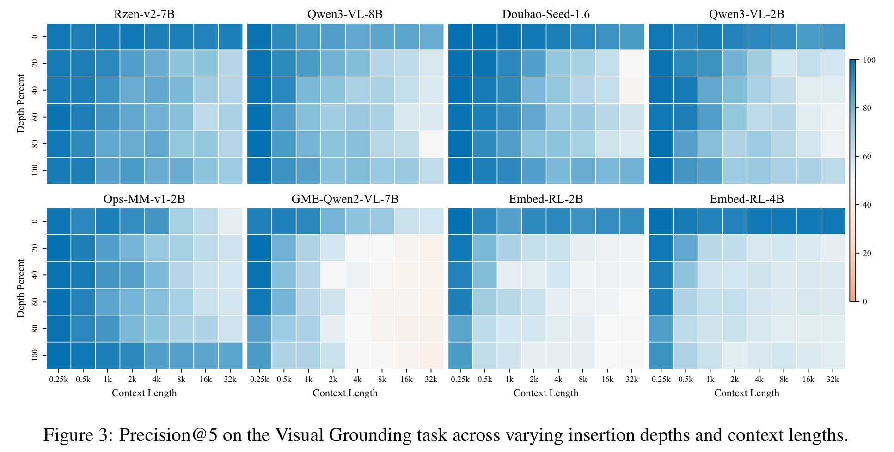
Figure 3: Precision@5 on the Visual Grounding task across varying insertion depths and context lengths. (原文图注)
第一行从左到右:Rzen-v2-7B、Qwen3-VL-8B、Doubao-Seed-1.6、Qwen3-VL-2B;第二行:Ops-MM-v1-2B、GME-Qwen2-VL-7B、Embed-RL-2B、Embed-RL-4B。两个普适规律肉眼可见:① 几乎每张图左侧(≤2K)都亮、右侧(16K/32K)都暗——细粒度检索在 2K 之后持续退化;② 每张图中间深度(40%–80%)都有一条明显的"暗带",首尾(0% 与 100%)反而亮——目标放中间就丢,放开头结尾就能找回。
两个瓶颈由此确立:① 中间位置信息丢失 + 边界偏好 :目标证据不在序列开头/结尾时,检索成绩显著下滑——序列各位置的表示与检索是不均匀的,现役模型无法在长序列中均匀保留信息;② 细粒度保持随长度迅速退化 :大多数模型只在 ≤2K tokens 时维持稳定精确检索,之后持续恶化,且跨多个模型家族普遍存在——不是某个架构或规模的专利。
论文用线性混合效应模型(LMM,以 needle 实例为随机截距)对位置偏差做了统计检验(Table 9):
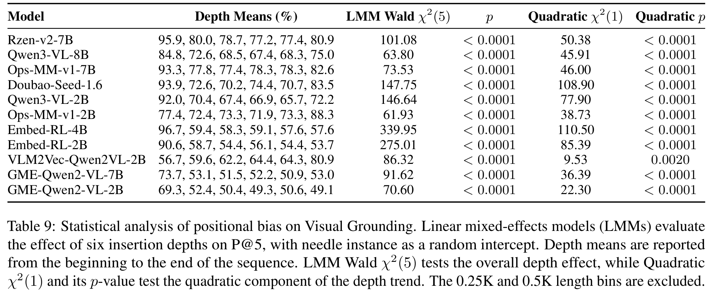
Table 9: Statistical analysis of positional bias on Visual Grounding. (原文表注)
六列深度均值从序列开头排到结尾,几乎所有模型的中间深度(第 2–5 档)都明显低于两端;全部模型的深度主效应 Wald χ²(5) 与二次项 χ²(1) 都极其显著(p<0.0001)——"位置偏差"不是噪声,是统计上确凿的系统性现象。Embed-RL-2B 的中间档跌到 53.7–58.7,而首尾 90.6,落差最大。
含义: 位置偏差说明现役 MEM 在长序列上并没有真正做到"内容寻址"——更像"端点记忆"。这对真实场景(证据总在文档中段)是硬伤。
6.2 跨模态干扰鲁棒性
合成任务中,把背景干扰按模态分成三类——纯文本干扰、纯图像干扰、混合模态干扰,观察模型对"异构背景噪声"的鲁棒性。结果显示模型可被明确分成三类(Table 4):
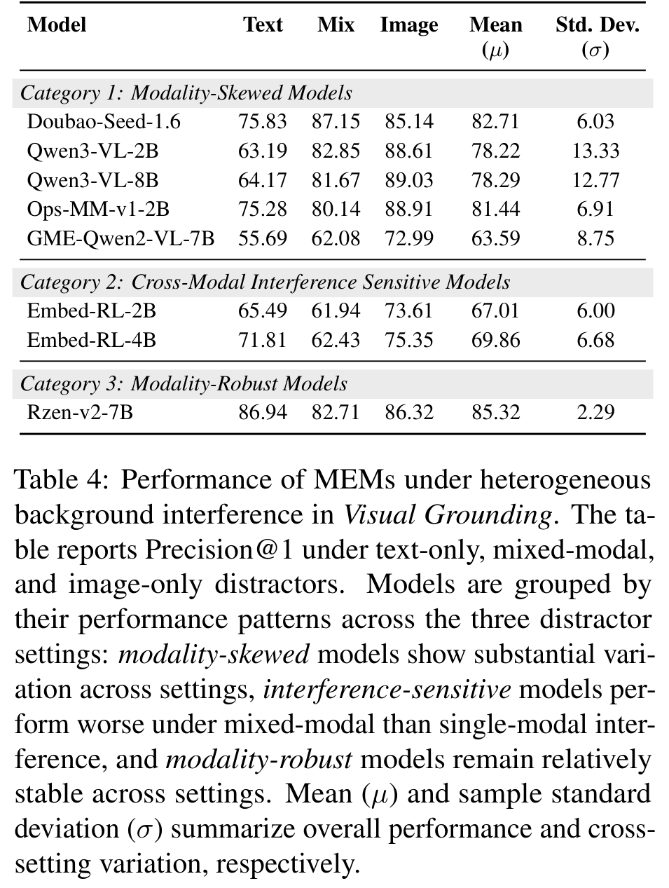
Table 4: Performance of MEMs under heterogeneous background interference in Visual Grounding. (原文表注)
三组模式的判读:第 1 类模态偏置模型 (Doubao、Qwen3-VL 系、Ops-MM-v1-2B、GME-7B)——Text/Mix/Image 三列成绩波动悬殊,σ 高达 6–13(Doubao 文本 75.83 vs 图像 85.14);第 2 类跨模态干扰敏感模型 (Embed-RL 系)——混合模态干扰(61.94/62.43)反而低于单一模态(65+ 与 73+),图文混在一起就"犯晕";第 3 类模态鲁棒模型 ——Rzen-v2-7B 三列 82.7–86.9,σ 仅 2.29。
附录 Table 15 给出全部 11 个模型的完整分档(新增 VLM2Vec 归入第 1 类、Ops-MM-v1-7B 归入第 3 类),并给出了均值和样本标准差的正式定义:
$$\mu = \frac{1}{N}\sum_{i=1}^{N} x_i, \qquad \sigma = \sqrt{\frac{1}{N-1}\sum_{i=1}^{N}(x_i - \mu)^2} \tag{3,4}$$
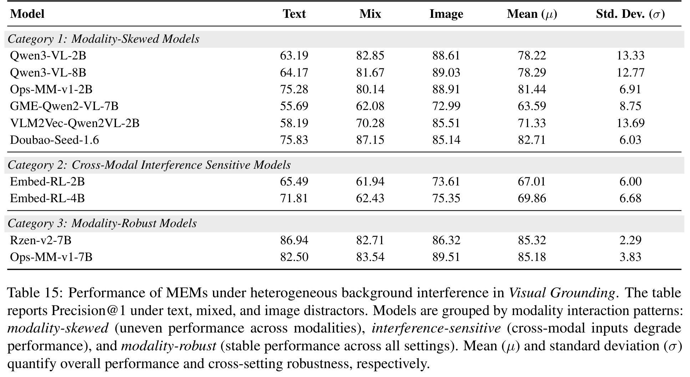
Table 15: Performance of MEMs under heterogeneous background interference in Visual Grounding. (原文表注)
完整名单:模态偏置类新增 VLM2Vec(σ=13.69,最大的列间波动);模态鲁棒类新增 Ops-MM-v1-7B(82.5/83.54/89.51,σ=3.83)。有意思的是同一家族的两个尺寸可能进不同类别——7B 的 Ops 稳健、2B 的 Ops 偏置,说明训练充分度比单纯规模更影响模态平衡。
6.3 上下文长度扩展下的性能动态
真实任务的共同规律(图 4):不像合成任务那样在某个长度"突然崩溃",而是渐进式退化 ——真实语料里显著证据密度更高,任务成败不那么依赖完美细粒度保持。
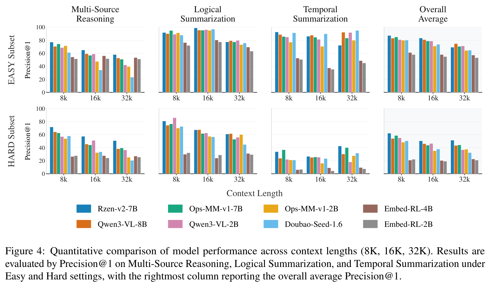
Figure 4: Quantitative comparison of model performance across context lengths (8K, 16K, 32K). (原文图注)
上行 Easy、下行 Hard;左起:Multi-Source Reasoning、Logical Summarization、Temporal Summarization、总体平均。① Multi-Source Reasoning:长短两端都缓降,Hard 下降更快;② Logical Summarization:Easy 呈非单调——16K 反升(更多显著证据帮助汇总)、32K 回落;③ Temporal Summarization:Easy 平稳,Hard 断崖——同一模型 Easy 七八十分、Hard 二三十分;④ 总平均里 Hard 曲线整体沉底。
附录 Table 16 给出图 4 背后全部模型的逐项数值(每个模型 × 3 任务 × Easy/Hard × 3 长度 = 18 个分数,含整体平均):
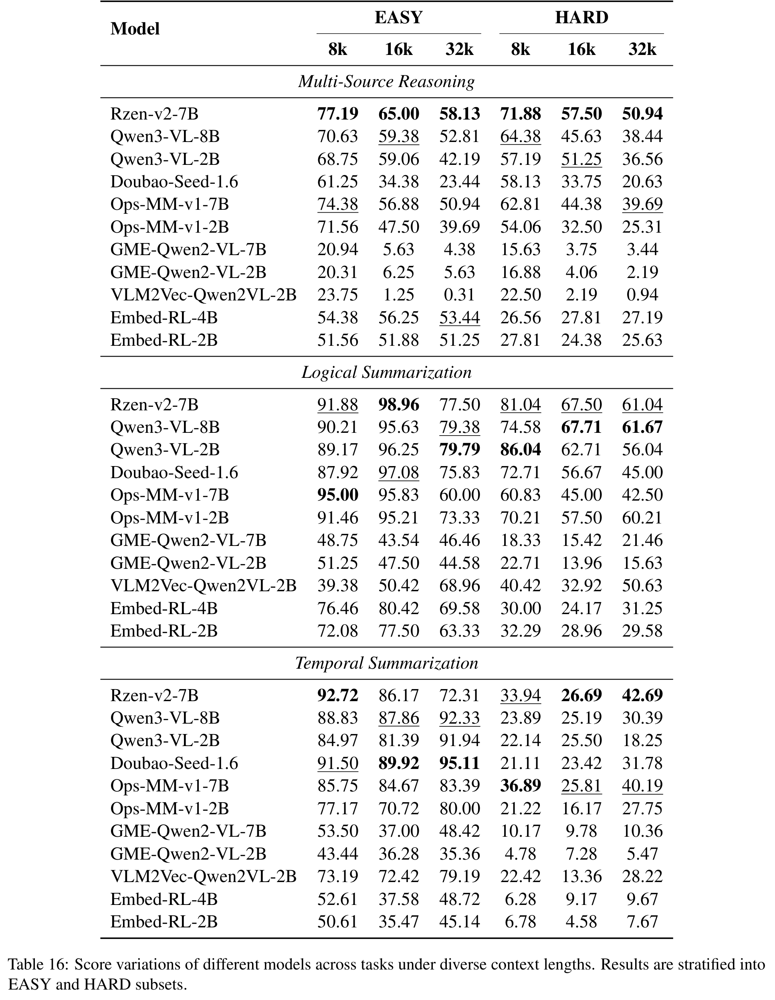
Table 16: Score variations of different models across tasks under diverse context lengths. (原文表注)
几个值得放大的细节:① 多源推理里 Doubao-Seed-1.6 Easy 从 61.25(8K)崩到 23.44(32K),说明"窗口 128K"不等于"32K 照样能用";② 逻辑摘要 Easy 的非单调性几乎全员可见(16K 普遍高于 8K);③ 时序摘要 Hard 是全场最惨烈战场——GME-2B 在 32K Hard 只剩 5.47,Embed-RL 系也全线个位数。
6.4 Hard 任务上的共性失败模式
Summarization 类最脆 :干扰项"保留部分语义、打乱全局结构"时降幅最大——模型靠全局语义匹配吃饭的证据。Multi-Source Reasoning 相对稳 :高相似度干扰下仍能粗粒度抓到证据链,但对链条完整性与逻辑一致性评估有限。Temporal Summarization 独立失效 :时序一被打乱成绩跳水——对长程事件结构不敏感,顺序无关的浅层视觉相似度是它们的依据。
附录 Figure 6 给出全部 11 个模型在 Visual Grounding 上的完整长度×深度热力图(主文图 3 的宏观补充):
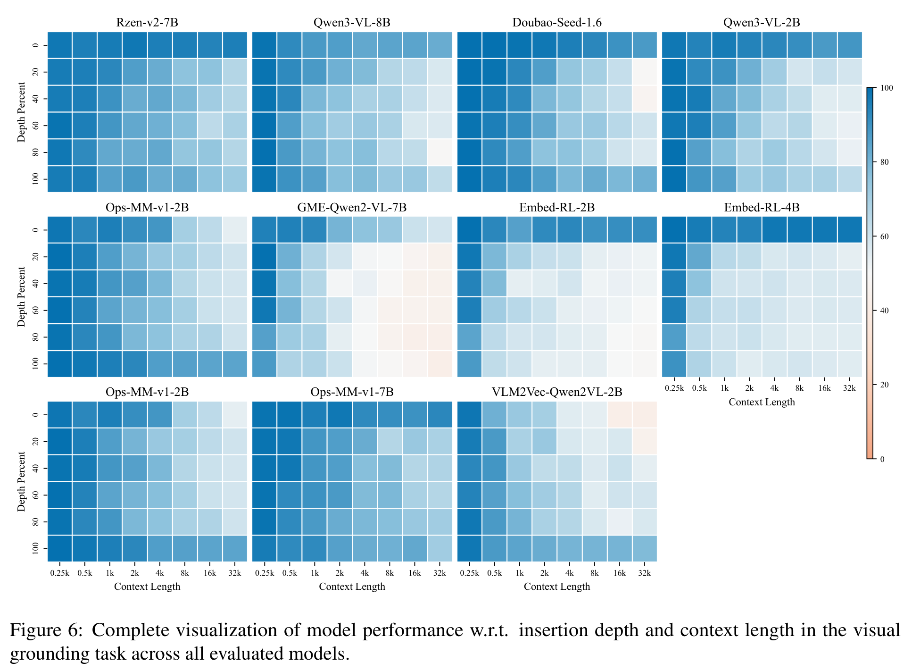
Figure 6: Complete visualization of model performance w.r.t. insertion depth and context length in the visual grounding task across all evaluated models. (原文图注)
与图 3 相比补上了 VLM2Vec 与 Ops-MM-v1-7B。可以发现 VLM2Vec 的热图几乎全暗(细粒度视觉判别整体失能),而 Ops-MM 7B 明显比 2B 亮——技术路线与训练差异在热图上的投影,比总平均分清晰得多。
07 · Conclusion
结论与局限
结论
作者总结:MMLongEmbed 的评测揭示出"有效信息利用"与"表示能力"之间的巨大鸿沟——现役 MEM 严重依赖表面特征匹配,难以捕捉深层语义与长程结构依赖。具体而言:细粒度信息保持随上下文增长显著退化;汇总类任务表现相对稳定,但一旦进入基于干扰项的细粒度判别场景就急剧下滑;而单纯扩大上下文窗口、模型规模或嵌入维度,都无法解决这些问题——需要根本性的长上下文语义建模革新。
局限
评测上限 32K tokens,基准设计不直接可扩展到任意更长输入;
只覆盖文本-图像模态,不含音频、连续 3D 空间数据等;
全部数据集为英文,多语言长上下文多模态理解无法评估。
08 · Commentary
编者点评
亮点
填补空缺且方法论扎实 :首个把"长上下文"+"多模态嵌入"两个变量一起系统化的基准;长度分层、C/Q 恒定、等长替换、统一 token 计数……每个环节都在消除一个已知的评测捷径,工程细节非常严谨。定量的诊断超出榜单本身 :LMM 统计检验、bootstrap 置信区间、Cohen's d——把"8B 没比 2B 强"从观感变成统计结论;位置偏差、模态鲁棒性分型都是可复用的分析范式。干扰项设计有想象力 :事件级时序扰动(语义分段+块置换)明显比朴素的帧打乱更能测出"是否理解时序";BM25 检索"以假乱真"的文本注入也值得后续基准借鉴。
可商榷之处
真实任务的长度采样有限 :真实任务只有 8K/16K/32K 三档,长度动力学的"解析度"不如合成任务;且 8K 起点已高于许多实际检索场景。"Hard"的构成混杂 :每个任务"Hard=删/换/扰动证据"的具体机制不同,跨任务比较 Hard 分差时需要小心,差异可能部分来自任务定义而非模型能力。专有模型与开源模型不同权 :Doubao-Seed-1.6 的 128K 窗口 + 未知参数量,使模型对比中的"长度公平性"带有一定不确定性(虽已用统一 token 计数缓解)。视频模态被压缩为 1 FPS 帧序列 :长程时序的评测其实是在"帧级表示"上做的,音频、运动信息天然被排除——这也与作者自己声明的局限一致。
读完最值得带走的一句话: 长上下文多模态嵌入的真正瓶颈不在"窗口能塞多长",而在"塞进去之后,细粒度信息在表示里还剩多少、位于什么位置、以及面对高相似度干扰时能否被精确地取出来"——MMLongEmbed 把这三个问题变成了可测的指标。
后续方向联想: 推理驱动的表示学习(Embed-RL 一脉)与更强的模态平衡训练,是论文数据里两个明显的突破口;把位置偏差/长度分层直接并入训练目标(如证据中间位置的重加权),可能是基准带来的下一个工程命题。
Glossary
术语速查
阅读中遇到缩写,可随时回到这里;正文里的缩写也可悬停查看释义。
阅读术语表(正文中带虚线下划线的缩写悬停可见)
缩写 全称 一句话解释
MEM Multimodal Embedding Model 把文本/图像/视频等映射进统一向量空间、支持跨模态检索的嵌入模型 MLLM Multimodal Large Language Model 多模态大语言模型,能同时处理文本与视觉输入的 LLM NIAH Needle-In-A-Haystack "大海捞针"式评测:把一条目标信息埋进长上下文,考验能否找回(MM-NIAH 是其多模态版) MEM/NIAH — 受检索增强生成(RAG)影响构造的检索任务口径 C/Q Candidates per Query 每条查询平均对应的候选文档数,跨长度池保持恒定 P@1 / R@k / MRR@k / nDCG@k Precision / Recall / Mean Reciprocal Rank / nDCG 检索排序的标准评估指标(首命准、召回率、倒数排名、折损累计增益) RAG Retrieval-Augmented Generation 检索增强生成:先从外部语料检索证据再让模型生成 LMM Linear Mixed-effects Model 线性混合效应模型,同时包含固定效应与随机效应(此处以 needle 实例为随机截距) BM25 Best Matching 25 经典稀疏检索打分函数,此处用来从同主题文档里"以假乱真"地挑替换段落 OOM Out Of Memory 显存溢出;评测时对超长输入做"中间截断"以防 OOM 1 FPS 1 frame per second 视频降采样到每秒 1 帧,构成标准时序帧序列 Hard / Easy Pool — 含高相似度干扰项的困难子集 / 未扰动的常规子集